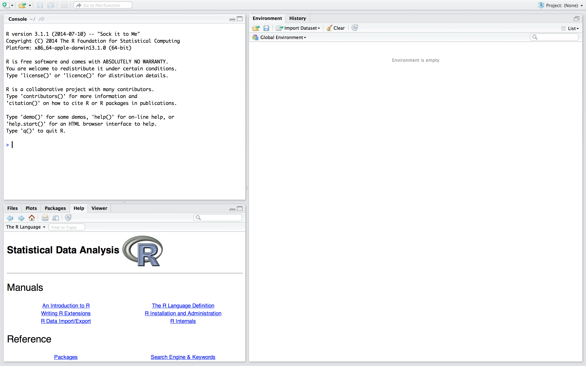
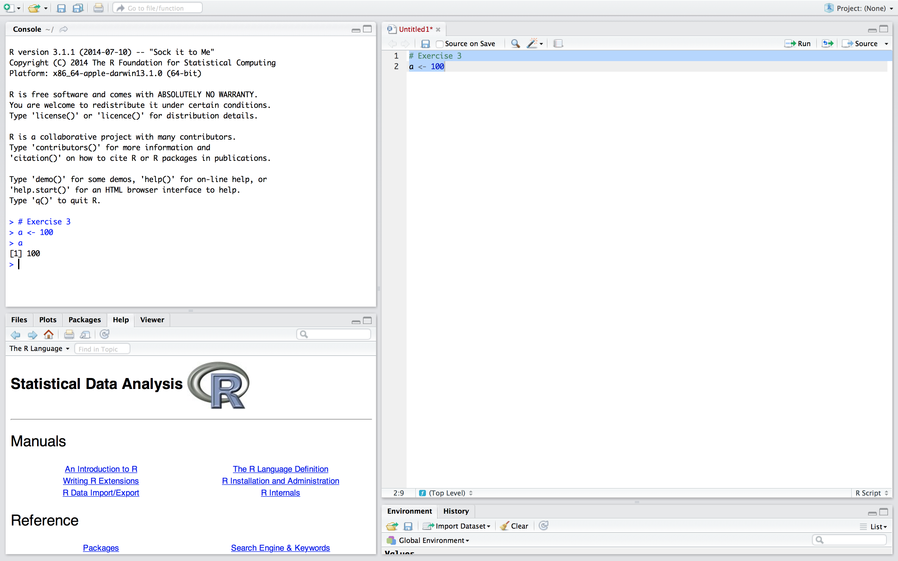
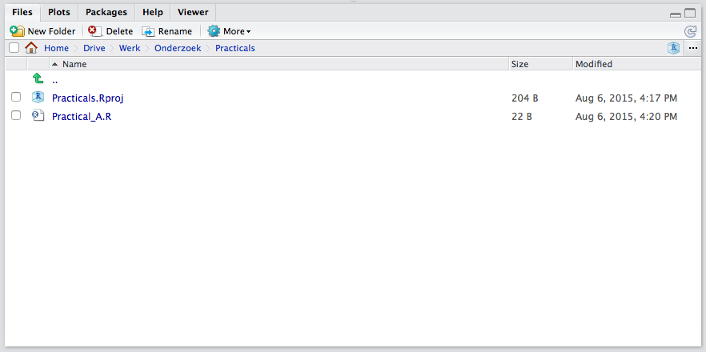

Practical A
Peter Stoltze and Anne Vinkel Hansen
Statistical Programming with R
Today we are going to get acquainted with R. A convenient way to work with R is through RStudio which adds many features and convenient options to the plain R interface. Most of these features go beyond the scope of this course, but as you will develop your R skillset, you might run into the need for them and hence RStudio so it is worthwhile to get to know RStudio right from the beginning.
If you have no experience with R, you will learn the most from following this document step by step. If you have some experience with R already, I suggest you try solving the questions without looking at the answers/walkthrough. You can always refer to the solutions as needed.
If you have any questions or if you feel that some code should be elaborated, feel free to ask.
Exercises
We start with the very basics and will move towards more advanced operations in R. First we will get acquainted with the language and the environment we work in.
- Open
RStudio
The following window will appear. You might be faced with a bit different layout, but don’t dispair. Close to everything can be configured to your likings, including the colour scheme!

RStudio is divided in 3 panes, namely the console, the environment/history pane and the pane where we can access our files, plots, the help files, make packages and view our data objects. You can change the order of the panes to your liking through RStudio’s preferences. I did, that is why your pane layout might differ from the layout in the above screenshot.
If we open an R-script (i.e. a file that contains R code), a fourth pane opens.
- Create a new
R-script
In the top left you will find  . Click it and select
. Click it and select R-script. (Real hackers of course quickly learn the shortcut, Ctrl+Shift+N)
A new pane opens, and we can start typing our code. It is preferable to work from an R-script instead of directly working in the console for at least the following reasons (there are many more).
- You will not lose code, since
RStudiocaches files even if they are not saved. - You log your own work. Code does not disappear over time, as you save the code in a separate file.
- With access to your
R-script and data, others are able to exactly reproduce your work. Reproducibility is becoming increasingly more important, and this is whereRStudioreally excells. - You become more organized in coding, as you focus on creating readable code. In the long run, this will result in you becoming a more efficient programmer. Remember: efficient code runs faster.
- Type the following in your new
R-script
# Exercise 3
a <- 100The # tells R that everything that follows in that specific line is not to be evaluated as code. Hence, you can use the # to create a comment in your R-scripts (or to temporarily leave out a line of code). I used # here to elaborate that the following line is the code from exercise 3 (of practical A).
The line a <- 100 assigns the value 100 to object a. When you run your code, it will be saved. The value 100 and the letter a are chosen to illustrate assigning in R. You might as well assign 123 to banana if you like. Really, anything goes.
- Select both lines of code and run the code by pressing Ctrl+Enter or Ctrl+R
Your code is executed and now appears in the console. If you type a in the console, R will return the assigned value. Try it! 
The shortcut Ctrl+Enter is your friend: it runs the current selection, or, if nothing is selected, the current line. If Ctrl+Enter yields no result, you probably have selected the console pane. You can switch to the code pane by moving the mouse cursor and clicking on the desired line in the code pane, or through Ctrl+1. Alternatively, you can move to the console through Ctrl+2.
You have now succesfully entered and executed your first code snippet in R by using RStudio.
- Save your code file as
Practical_A.Rin a folder namedPracticals
You can use the standard Ctrl+S or click on the icon  in the code pane.
in the code pane.
Your document is now saved. We saved it in a separate folder so that we are able to create a project out of our practicals.
- Create a project by clicking on
 in the top-right corner of
in the top-right corner of RStudio
Select “New Project”, click “Existing Directory” and navigate to the folder where you have just saved your code. When all is done, click on “Create Project”
You will notice in the files pane that a file Practicals.RProj has been created

The possibility to organize your work in projects is one of the benefits of using RStudio. Within a project, everything is relative to the .Rproj file. This means that if you share the folder with someone else, this someone only has to open the .Rproj file to be able to access and run all code and documents involved with this project. Again, when considering reproducability of results, working in projects is a huge advantage.
- Open the
R-scriptnotebook.R
Download the file (possibly to the same Practicals directory you just created) and open it in RStudio using Ctrl+O(pen) and browse to the position where you saved the file .
- Have a look at the code in the script (but don’t run it just yet!) and try to decipher what is going on.
If you do not understand what you are looking at, please ask for help.
- If not open anymore, open your script by clicking on
Practical_A.Rin the files pane. Run both lines of code again and inspect the contents of the global environment by typing and runningls()
The following is returned by R
ls()## [1] "a"There is one object in the environment, and it is called a. If you look at the environment pane, you can quickly see the corresponding information (i.e. there is no need to type ls()) and you can see that object a contains a value. You can even see which value.
A value is the most basic object in R. The next step up in objects is a vector, followed by a matrix, followed by an array. Eventually, each of these objects can be stored in a list. We will learn about vectors, matrices and arrays later today.
- Make two vectors: one named
vec1with values 1 through 6 and one namedvec2with letters A through F.
vec1 <- c(1, 2, 3, 4, 5, 6)
vec2 <- c("A", "B", "C", "D", "E", "F")To create a vector we used c(), which stands for ‘concatenation’. It is just a series of numbers or letters.
- Create two matrices, one from
vec1and one fromvec2. The dimensions for both matrices are 3 rows by 2 columns.
mat1 <- matrix(vec1, nrow = 3, ncol = 2)
mat2 <- matrix(vec2, nrow = 3, ncol = 2)To create a matrix we used matrix(). For a matrix we need to specify the dimensions (in this case 3 rows and 2 columns) and the input (in this case vec1 or vec2) needs to match these dimensions.
- Inspect your vectors and matrices. Are all numerical?
vec1## [1] 1 2 3 4 5 6vec2## [1] "A" "B" "C" "D" "E" "F"mat1## [,1] [,2]
## [1,] 1 4
## [2,] 2 5
## [3,] 3 6mat2## [,1] [,2]
## [1,] "A" "D"
## [2,] "B" "E"
## [3,] "C" "F"vec1 and mat1 contain numbers and vec2 and mat2 contain characters.
- Make a matrix from both
vec1andvec2with 6 rows and 2 columns. Inspect this matrix.
mat3 <- matrix(c(vec1, vec2), 6, 2)
mat3## [,1] [,2]
## [1,] "1" "A"
## [2,] "2" "B"
## [3,] "3" "C"
## [4,] "4" "D"
## [5,] "5" "E"
## [6,] "6" "F"or
mat3b <- cbind(vec1, vec2)
is.matrix(mat3b)## [1] TRUEmat3b## vec1 vec2
## [1,] "1" "A"
## [2,] "2" "B"
## [3,] "3" "C"
## [4,] "4" "D"
## [5,] "5" "E"
## [6,] "6" "F"If one or more elements in the matrix represent characters, all other elements are also converted to characters. A matrix is just for either numeric or character elements. Notice that the second approach (the column bind approach from mat3b) returns a matrix where the column names are already set to the name of the bound objects.
To solve the problem of charactered numbers we can create a dataframe. A dataframe is essentially a matrix that allows for character elements. The use of a dataframe is often preferred over the use of a matrix in R, except for purposes where pure numerical calculations are done, such as in matrix algebra. However, most datasets do contain character information and a dataframe would normally be your preferred choice when working with your own collected datasets in R.
- Make a dataframe called
dat3wherevec1andvec2are both columns. Name the columnsV1andV2, respectively. Use functiondata.frame().
dat3 <- data.frame(V1 = vec1, V2 = vec2)
dat3## V1 V2
## 1 1 A
## 2 2 B
## 3 3 C
## 4 4 D
## 5 5 E
## 6 6 F- Again, make a dataframe called
dat3bwherevec1andvec2are both columns. Name the columnsV1andV2, respectively. Use functionas.data.frame()on the matrix obtained fromQuestion 4.
This is a tricky situation. At face value, everything may seem to be in order. But, be aware that the code
dat3b <- as.data.frame(mat3)
dat3b## V1 V2
## 1 1 A
## 2 2 B
## 3 3 C
## 4 4 D
## 5 5 E
## 6 6 Fdoes not work properly (at least not as intended) as the matrix nature of mat3 turned everything into a character value and you have lost the numerical nature of vec1. It may appear to be working, but if we check if column 1 is numerical, it turns out not to be the case.
- Check if the first column in the data frames from Question 4 and Question 5 are indeed numeric. If not, determine what they are.
is.numeric(dat3[, 1])## [1] TRUEis.numeric(dat3b[, 1])## [1] FALSEThe first column in matrix dat3b obtained from Question 5 is indeed not numeric. As a matter of fact, it is also not a character variable.
is.character(dat3b[, 1])## [1] TRUERather tricky; the function as.data.frame() has converted the first variable to a factor.
is.factor(dat3b[, 1])## [1] FALSEThis is due to us not specifying the variable correctly in the matrix we used to create the dataframe. Factors are categorical variables that are depicted by numbers. Character vectors are converted to factors in data frames.
- Select 1) the third row, 2) the second column and 3) the intersection of these two in the dataframe
dat3that you have created in Question 4.
dat3[3, ] #3rd row## V1 V2
## 3 3 Cdat3[, 2] #2nd column## [1] "A" "B" "C" "D" "E" "F"dat3$V2 #also 2nd column## [1] "A" "B" "C" "D" "E" "F"dat3[3,2] #intersection## [1] "C"The [3,2] index is very useful in ‘R’. The first number (before the comma) represents the row and the second number (after the comma) represents the column. For a vector there are no two dimensions and only one dimension can be called. For example, vec1[3] would yield 3. Try it.
Columns can also be called by the $ sign, but only if a name has been assigned. With dataframes assigning names happens automatically.
Note that R automatically reports the values the character column can take. This means that the column is indeed a factor (a categorical variable - as it is supposed to be). A useful function to inspect the structure of a dataframe is str(). Try running it.
str(dat3)## 'data.frame': 6 obs. of 2 variables:
## $ V1: num 1 2 3 4 5 6
## $ V2: chr "A" "B" "C" "D" ...Inspecting the structure of your data is vital, as you probably have imported your data from some other source. If we, at a later stage, start analyzing our data without the correct measurement level, we may run into problems. One problem that often occurs is that categorical variables (factors in R) are not coded as such.
- Open the workspace
boys.RData. You need to download this file and put it in the project folder. Either run the below code
load("boys.RData")or double-click the boys.RData file on your machine (right-click and open with RStudio if it does not open by default in RStudio, but in R).
The boys object will be added to your Global Environment. You can now use the boys data by running
boys- Most packages have datasets included. Since we have not learned to load packages yet, you are presented with such a data set in a workspace. Open the
boysdataset (it is from packagemice, by the way) by typingboysin the console, and subsequently by using the functionView().
The output is not displayed here as it is simply too large.
Using View() is preferred for inspecting datasets that are large. View() opens the dataset in a spreadsheet-like window (conform MS Excel, or SPSS). If you View() your own datasets, you can not edit the datasets’ contents.
- Find out the dimensions of the
boysdata set and inspect the first and final 6 cases in the data set. To do it numerically, find out what the dimensions of the boys dataset are.
dim(boys)## [1] 748 9There are 748 cases on 9 variables. To select the first and last six cases, use
boys[1:6, ]## age hgt wgt bmi hc gen phb tv reg
## 3 0.035 50.1 3.650 14.54 33.7 <NA> <NA> NA south
## 4 0.038 53.5 3.370 11.77 35.0 <NA> <NA> NA south
## 18 0.057 50.0 3.140 12.56 35.2 <NA> <NA> NA south
## 23 0.060 54.5 4.270 14.37 36.7 <NA> <NA> NA south
## 28 0.062 57.5 5.030 15.21 37.3 <NA> <NA> NA south
## 36 0.068 55.5 4.655 15.11 37.0 <NA> <NA> NA southboys[743:748, ]## age hgt wgt bmi hc gen phb tv reg
## 7410 20.372 188.7 59.8 16.79 55.2 <NA> <NA> NA west
## 7418 20.429 181.1 67.2 20.48 56.6 <NA> <NA> NA north
## 7444 20.761 189.1 88.0 24.60 NA <NA> <NA> NA west
## 7447 20.780 193.5 75.4 20.13 NA <NA> <NA> NA west
## 7451 20.813 189.0 78.0 21.83 59.9 <NA> <NA> NA north
## 7475 21.177 181.8 76.5 23.14 NA <NA> <NA> NA eastor, more efficiently:
head(boys)## age hgt wgt bmi hc gen phb tv reg
## 3 0.035 50.1 3.650 14.54 33.7 <NA> <NA> NA south
## 4 0.038 53.5 3.370 11.77 35.0 <NA> <NA> NA south
## 18 0.057 50.0 3.140 12.56 35.2 <NA> <NA> NA south
## 23 0.060 54.5 4.270 14.37 36.7 <NA> <NA> NA south
## 28 0.062 57.5 5.030 15.21 37.3 <NA> <NA> NA south
## 36 0.068 55.5 4.655 15.11 37.0 <NA> <NA> NA southtail(boys)## age hgt wgt bmi hc gen phb tv reg
## 7410 20.372 188.7 59.8 16.79 55.2 <NA> <NA> NA west
## 7418 20.429 181.1 67.2 20.48 56.6 <NA> <NA> NA north
## 7444 20.761 189.1 88.0 24.60 NA <NA> <NA> NA west
## 7447 20.780 193.5 75.4 20.13 NA <NA> <NA> NA west
## 7451 20.813 189.0 78.0 21.83 59.9 <NA> <NA> NA north
## 7475 21.177 181.8 76.5 23.14 NA <NA> <NA> NA eastThe functions head() and tail() are very useful functions. For example, from looking at both functions we can observe that the data are very likely sorted based on age.
- It seems that the
boysdata are sorted based onage. Verify this.
To verify if the data are indeed sorted, we can run the following command to test the complement of that statement. Remember that we can always search the help for functions: e.g. we could have searched here for ?sort and we would quickly have ended up at function is.unsorted() as it tests whether an object is not sorted.
is.unsorted(boys$age)## [1] FALSEwhich returns FALSE, indicating that boys’ age is indeed sorted (we asked if it was unsorted!). To directly test if it is sorted, we could have used
!is.unsorted(boys$age)## [1] TRUEwhich tests if data data are not unsorted. In other words the values TRUE and FALSE under is.unsorted() turn into FALSE and TRUE under !is.unsorted(), respectively.
- Inspect the
boysdataset withstr(). Use one or more functions to find distributional summary information (at least information about the minimum, the maximum, the mean and the median) for all of the variables. Give the standard deviation forageandbmi.
str(boys)## 'data.frame': 748 obs. of 9 variables:
## $ age: num 0.035 0.038 0.057 0.06 0.062 0.068 0.068 0.071 0.071 0.073 ...
## $ hgt: num 50.1 53.5 50 54.5 57.5 55.5 52.5 53 55.1 54.5 ...
## $ wgt: num 3.65 3.37 3.14 4.27 5.03 ...
## $ bmi: num 14.5 11.8 12.6 14.4 15.2 ...
## $ hc : num 33.7 35 35.2 36.7 37.3 37 34.9 35.8 36.8 38 ...
## $ gen: Ord.factor w/ 5 levels "G1"<"G2"<"G3"<..: NA NA NA NA NA NA NA NA NA NA ...
## $ phb: Ord.factor w/ 6 levels "P1"<"P2"<"P3"<..: NA NA NA NA NA NA NA NA NA NA ...
## $ tv : int NA NA NA NA NA NA NA NA NA NA ...
## $ reg: Factor w/ 5 levels "north","east",..: 4 4 4 4 4 4 4 3 3 2 ...summary(boys) #summary info## age hgt wgt bmi
## Min. : 0.035 Min. : 50.00 Min. : 3.14 Min. :11.77
## 1st Qu.: 1.581 1st Qu.: 84.88 1st Qu.: 11.70 1st Qu.:15.90
## Median :10.505 Median :147.30 Median : 34.65 Median :17.45
## Mean : 9.159 Mean :132.15 Mean : 37.15 Mean :18.07
## 3rd Qu.:15.267 3rd Qu.:175.22 3rd Qu.: 59.58 3rd Qu.:19.53
## Max. :21.177 Max. :198.00 Max. :117.40 Max. :31.74
## NA's :20 NA's :4 NA's :21
## hc gen phb tv reg
## Min. :33.70 G1 : 56 P1 : 63 Min. : 1.00 north: 81
## 1st Qu.:48.12 G2 : 50 P2 : 40 1st Qu.: 4.00 east :161
## Median :53.00 G3 : 22 P3 : 19 Median :12.00 west :239
## Mean :51.51 G4 : 42 P4 : 32 Mean :11.89 south:191
## 3rd Qu.:56.00 G5 : 75 P5 : 50 3rd Qu.:20.00 city : 73
## Max. :65.00 NA's:503 P6 : 41 Max. :25.00 NA's : 3
## NA's :46 NA's:503 NA's :522sd(boys$age) #standard deviation for age## [1] 6.894052sd(boys$bmi, na.rm = TRUE) #standard deviation for bmi## [1] 3.053421Note that bmi contains 21 missing values, e.g. by looking at the summary information. Therefor we need to use na.rm = T to calculate the standard deviation on the observed cases only.
- Select all boys that are 20 years or older. How many are there?
The logical operators (TRUE vs FALSE) are a very powerful tool in R. For example, we can just select the rows (respondents) in the data that are older than 20 by putting the logical operater within the row index of the dataset:
boys2 <- boys[boys$age >= 20, ]
nrow(boys2)## [1] 12or, alternatively,
boys2.1 <- subset(boys, age >= 20)
nrow(boys2.1)## [1] 12- Select all boys that are older than 19, but younger than 19.5. How many are there?
boys3 <- boys[boys$age > 19 & boys$age < 19.5, ]
nrow(boys3)## [1] 18or, alternatively,
boys3.2 <- subset(boys, age > 19 & age < 19.5)
nrow(boys3.2)## [1] 18- What is the mean age of boys younger than 15 years of age that do not live in region
north?
mean(boys$age[boys$age < 15 & boys$reg != "north" ], na.rm = TRUE)## [1] 6.044461or, alternatively,
mean(subset(boys, age < 15 & reg != "north")$age, na.rm=TRUE)## [1] 6.044461The mean age is 6.0444609 years
Today we have learned to use R at its basics. This offers tremendous flexibility, but may also be inefficient when our aim is some complex analysis, data operation of data manipulation. Doing advanced operations in basic R may require lots and lots of code. Tomorrow we will start using packages that allow us to do complicated operations with just a few lines of code.
As you start using R in your own research, you will find yourself in need of packages that are not part of the default R installation. The beauty of R is that its functionality is community-driven. People can add packages to CRAN that other people can use and improve. Chances are that a function and/or package has been already developed for the analysis or operation you plan to carry out. If not, you are of course welcome to fill the gap by submitting your own package.
End of Practical A.